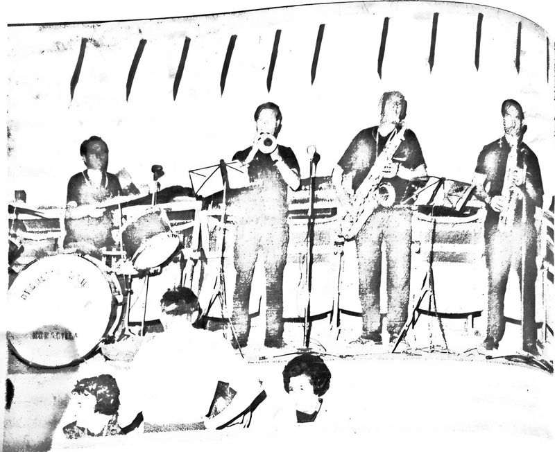

Historietas, chascarrillos y romances
Anécdotas del pueblo, las retahílas de los niños, los dichos del trabajo, las pullas y los romances y canciones que se cantaban en Alaejos, según los recogió Antonio Lucas Varela.
En esta página (6 apartados · 26 min de lectura)
En Alaejos. Una antropología cultural (2024), Antonio Lucas Varela dedicó dos apartados del capítulo III al humor y la tradición oral del pueblo: unas «historietas (casi) verídicas», anécdotas auténticas en las que cambió los nombres de los protagonistas, y los «chascarrillos», coplas, retahílas, dichos y romances «que aún hoy, en determinadas fechas o en momentos muy señalados, se cantan y bailan espontáneamente». Esta página recoge una selección. Los dichos sobre Alaejos y sus vecinos, como «Tres cosas tiene Alaejos…», están en Dichos, cabañuelas y habla; las citas del vino en los clásicos, en El vino de Alaejos; y las melodías de muchas de estas canciones, en el Cancionero.
Historietas (casi) verídicas
Lucas asegura que son «auténticas» y que «definen con meridiana claridad la idiosincrasia de los alaejanos». Las contamos resumidas; Lucas cambió los nombres de los protagonistas.
- Alcaldables
- Hacia los años sesenta, al menos ocho vecinos querían ser alcalde y todos fueron a ver al gobernador civil para pedir el nombramiento. Hizo tanta gracia en Valladolid que en los bares, en lugar de un chato de vino, se pedía «un alcalde de Alaejos».
- El hambre agudiza el ingenio
- Un hatero, el chico que llevaba la comida a los segadores, se comió por el camino todo el cocido menos la sopa, que no le gustaba. Al llegar contó que el burro se había caído y se había perdido el cocido, pero que él, con mucha pericia, había salvado la sopa.
- Ingenio del bueno
- En los años del estraperlo, un vecino que llevaba a vender a Castrejón una fanega de garbanzos, 42 kilos, fue detenido por la Guardia Civil. En el cuartelillo, ante el retrato de Franco, recitó: «Yo sin ti no he de vivir, / ni sin vosotros tampoco» —esto, a los garbanzos—, «tú no puedes consentir / que estos se los coma otro / haciéndome falta a mí». Hubo risas y le perdonaron.
- La rata doña Rosita
- Un feriante montaba en la plaza una plaza de toros diminuta, de metro y medio, con cuarenta puertas marcadas con cartas de la baraja. Los apostantes compraban una carta y la rata, doña Rosita, salía de debajo de una lata, daba vueltas y se metía por una puerta: ganaba quien tuviera esa carta.
- Escuela de capillo
- Doña Manuela, que tenía escuela de capillo con su hija Luisa, sacaba a los críos al corral en el recreo y les soltaba un choto manso para que lo torearan, con los carros y la aventadora de barrera.
- Con la soga al cuello
- Un escobero dejaba cada día a su burra suelta junto al retamal, en la raya de Castrejón, y ella se metía a comer la cebada de un vecino de Castrejón. El escobero lo negaba, hasta que un día encontró a la burra sin orejas ni rabo y con un cartel al cuello: «Amo, las orejas y el rabo me han cortado, y si en vez de cebada hubiera sido trigo, lo que han hecho conmigo harían contigo».
- Utilidad equivocada
- Una señora devolvió al cantarero una tinaja de cien litros porque el vino se salía por las grietas. «¿Qué le echó?», preguntó él. «Vino.» «Ahí está el error: si le hubiera echado lentejas, habría visto que no se salía ninguna.»
- La venganza se sirve fría
- Una pandilla se presentaba cada año, la noche de la Casita, en casa de un vecino que presumía de hospitalario, justo a la hora de cenar, y se comía su cena. Él preparó la venganza: un año, al acabar, la familia se puso a ladrar y la hija mayor sacó «el postre», una bandeja con los pellejos de los cachorros de su perrita ratonera. No volvieron a comerle la cena del día 8.
- Asno con asno se entiende
- Un burro se negó a cruzar la plaza. Su amo, tras mucho razonar con él, se metió bajo su barriga, lo cargó a hombros y cruzó la plaza con el burro encima, ante el asombro de todos.
- Ante el juez
- Uno que no pagaba un marrano que había comprado dijo que no podía ir al juicio porque no tenía ropa, y el vendedor le prestó su capa. Ante el juez lo negó todo: «Es como si ahora me dice que esta capa es suya».
- Tratamiento médico
- Un paciente volvió a la consulta del médico, don Adolfo Araújo, a pedir otra cosa en lugar de los supositorios, porque «ni con pan me entran».
- El curandero
- Uno al que llamaban «el sabio», y que Lucas llama Ervigio, hablaba casi a diario con Dios cuando estaba en el campo. Un día Dios le mandó ir a hablar con el papa, y se fue a Roma en bicicleta. Dejó la labranza y puso una tienda de ultramarinos, y dos de sus hijos montaron consulta en Madrid, en el barrio de Usera.
- Justicia salomónica
- Uno al que llamaban «el godo» propuso a su mujer, que ya no quería saber nada de obligaciones matrimoniales, que tomaran una criada que la ayudara en casa y, de paso, a él. Ella se lo pensó mejor y le pidió el divorcio. Él le preguntó cuánto pesaba al casarse: 45 kilos; y ahora, 75. «Esos 30 kilos son bienes gananciales: cuando me devuelvas 15, te concedo el divorcio».
- Qué malo es el tabaco
- Uno estrenó el Domingo de Ramos —quien no estrena algo ese día se queda sin manos— un chaleco que le había regalado su mujer, y se lo quemó al guardar el mechero de mecha, el «mataconejos», mal apagado. Decidió contárselo en la cama, en pleno débito conyugal, y ella le contestó: «Estate a lo que estás y deja el chaleco».
- Chiquillada
- Una tarde de mayo, una pandilla de chicos se apostaba en el camino de la Casita a ver pasar a las mozas que iban a la novena. Al llegar ellas, el jefe gritaba «¡Mininas fuera!» y se ponían todos a mear, para escándalo de las beatas y risitas de reojo de alguna.
La Orquesta Flor
Una de las historietas, con nombres reales, es la de los músicos del pueblo, que Manuel Belloso Parrado le contó y le dio por escrito al final de su vida. La Orquesta Flor la fundaron Félix Pérez Viviano (saxo alto), Bernardo Prieto Pozo (trompeta), Manuel López Gallego (clarinete) y Julián Rodríguez González (batería). Cuando Manuel López y Julián Rodríguez se fueron al Norte entraron Ángel Prieto Pozo y el propio Manuel Belloso, y luego Luis Mena (saxo tenor). Al emigrar los hermanos Prieto y Luis Mena nació Ritmo 80, con Félix Pérez, Manuel Belloso, Teodoro Caballero Guerras (trompeta) y Agustín «Quitín» Caballero Guerras (batería). Tocaban pasodobles, valses, tangos, foxes, rock y chotis en Carpio del Campo, Bobadilla, El Campillo, Castrejón, Siete Iglesias, Castronuño, Vadillo, Brahojos y hasta en Ponferrada, y ganaban más que en el campo, con comida y alojamiento. En Alaejos tocaban por la Casita, Semana Santa, el 10 de mayo, Carnaval, Nochevieja y para las cofradías de San Blas y San Isidro. Manuel Belloso tocó la Entradilla de Alaejos durante 45 años, primero con Nardi «Sagasta» al redoblante y después con Quitín Caballero al tamboril (véase La charambita y los danzantes).


Chiquilladas
Retahílas y cancioncillas de los niños, con la explicación de Lucas.
A la puerta del bautizo
Lo cantaban los chiquillos a la puerta de la casa del bautizo para que los padrinos tiraran a la rebatiña caramelos y perras. Lucas omite la última parte, «de muy mal gusto».
Bautizo "cagao", que a mí no me han "dao".
Si cojo al chiquillo, le tiro a un "tejao".
Bautizo roñoso,
que a la madrina le rasca el bolso.
El niño "bautizao"
en la pila se ha "cagao".
Si cojo al chiquillo, le tiro a un "tejao".
Vacantes pedimos
La canción de las vacaciones, que se empezaba a cantar muchos días antes; cada maestro tenía su estrofa. Los tres maestros que nombra daban clase en los años cincuenta; en la relación de maestros del libro figuran Vitorino Fernández, Tomás Romero Prieto y Manuel Vara Vara. Su melodía está en el Cancionero.
Vacantes pedimos, si no nos los dan
verá usté la guerra que vamos a dar.
Debajo los tinteros salen ratones
pidiendo a los maestros las vacaciones.
Vacantes pedimos a D. Victorino
si no nos los da le comemos el tocino.
Vacantes pedimos a D. Tomás
si no nos los da le rompemos el compás.
Vacantes pedimos a D. Manuel
si no nos los da le comemos el pastel.
Para cada ocasión
- Cuando llegaban las cigüeñas a la torre de Santa María, en febrero
- «La cigüeña en la torre / machando el ajo, / se le cayó el mortero / del nido abajo».
- Cuando se iba la luz
- «Luz, lucita, / ven enseguidita, / que estamos a oscuritas», o se rezaban rosarios hasta que volvía.
- En las tormentas
- «Santa Bárbara bendita, / que en el cielo estás escrita / con papel y agua bendita / en el ara de la cruz. / Pater noster, amén, Jesús».
- Al ver el arco iris
- «Cuando llueve y hace sol, / sale el arco del Señor. / Cuando llueve y hace frío, / sale el arco de los judíos. / Cuando llueve y hace aire, / sale el arco de los frailes».
- Al ver salir la luna
- «Luna, lunera, cascabelera, / debajo la cama tienes la cena».
- A una mariquita en la mano
- «Sansanita, sansanita, / cuéntame los dedos, / que si no me los cuentas / te parto por el medio».
- A quien quería que le devolvieran un regalo
- «Santa Rita, Rita, Rita, / lo que se da ya no se quita, / que en el cielo queda escrita / con papel y agua bendita».
- A quien no pagaba una deuda
- «Llorique manteles, / un cuarto me debes, / si no me lo pagas / mañana te mueres».
- Al que se le acusaba de mentir
- «¡Mentira! / Alza el rabo y tira». «Como no tengo rabo, no puedo tirar». «Pues pronto lo tendrás».
- Al encontrarse algo
- «Una cosa me he encontrado, / cuatro veces lo diré, / si su dueño no aparece / con ella me quedaré».
- A los uchos de los agujeros de la iglesia
- «Perico carne, perico carne», se les gritaba una y otra vez, esperando que los pollos de cernícalo asomaran la cabeza y se cayeran.
- A los muy preguntones
- «¿Qué te han echado los Reyes?» «La calle pa correr y los cantos pa tropezar». O bien: «¿Dónde vas?» «A la huerta del conde». «Que te pelen y te monden, que te quiten ese pellejo y te pongan otro más viejo».
- Al que lleva algo encima sin saberlo
- «El burro de san Vicente, que lleva algo y no lo siente».
- Para contar los botones de un vestido nuevo
- «Botón, botella, / señorita doncella, / hija del rey, buena moza, / jorobada y tiñosa».
- Para esconderse
- «Una, dos, tres, / conejitos a esconder, / que la liebre os va a coger. / ¿Está o no está?».
- Para acabar el juego
- «Por ahí viene un toro, / por allí una vaca, / cada uno a su casa». Y al encenderse la farola de la plaza: «Santas y buenas noches nos dé Dios. Cada uno a su casa».
- A la vuelta de la vendimia, en los carros
- «Venimos de vendimiar / del majuelo de mi abuelo, / y no nos quiere pagar / porque hemos roto un puchero».
- Trabalenguas
- «Del coro al Caño, del Caño al coro…», muy deprisa; y, para quitar el hipo, sin respirar: «Por el puente Benavente palomas iban veinte: paloma una, paloma dos…».
- Respuesta de un alumno
- Don Bonifacio, maestro de la escuela de chicos, le afeó a un alumno que hubiera dejado sin escribir un trozo de la página. «Don Bonifacio, este picón le dejo pa avena».
A la escuela, que viene Manuela
Manuela, Isabel, Evencio y Justo eran cuatro hermanos que tuvieron escuela de capillo en la casa que luego fue el bar de Bernabé. Representaban obras de teatro con sus alumnos, con lo que vendían las entradas a las familias, y Manuela hacía de apuntadora y se la oía más que a los actores. Lo contó Concha Varela Calvo.
¡A la escuela, que viene Manuela!
¡A leer, que viene Isabel!
¡Silencio, que viene Evencio!
¡Ay, qué susto! ¡Que viene Justo!
Ya viene doña Carmen
Lo cantaban los niños de la escuela de capillo de doña Carmen para avisar de su llegada, y era mentira.
Ya viene Doña Carmen con gafas y reloj
y las sandalias blancas ¡Válgame, Dios!
¡Doña Carmen! ¡Es mentira! ¡Doña Carmen! ¡Es mentira!
¿Dónde vas, Margarita?
Juego de corro de niñas: Margarita se pavoneaba en el centro mientras contestaba a las preguntas de las demás.
¿Dónde vas Margarita?
A la fuente por agua.
¿Quieres que te acompañe?
¡Uy! Si se entera mi novio.
¿Pues, quién es tu novio?
Un pescador.
¿Y qué pesca?
Pececitos
¿Y por dónde los agarra?
Por la colita.
Adiós, adiós, Margarita.
Dichos del trabajo y otras coplas
Los mandamientos del hatero son cinco:
El primero, correr por el gavillero.
El segundo, dar agua al burro.
El tercero, recoger platos y puchero.
El cuarto, hacer sombra al hato.
El quinto, comer poco y andar listo.
El hatero era el chico que llevaba el hato, la comida, a los segadores.
Un sabio me dijo a mí,
Cuál era el mayor trabajo,
Yo le dije: segar cebada chica y cuesta abajo
Que vivan las mis arrapas,
que tienen mucho mondongo,
se comen a cucharadas
como tajadas de lomo.
Lo cantaban las mondongueras de la matanza cuando se rompía alguna morcilla y las arrapas salían con mucho mondongo (véase La matanza).
El demonio en la oreja te está diciendo
Amontona la parva que está lloviendo.
¡Viva el verano, viva el invierno!
Cacahuetes tostados en ca Consuelo.
Tengo las albarcas rotas
Y el pantalón sin culera,
Y el bolsillo sin un duro
Vaya invierno que me espera.
Una hora duerme el gallo,
dos el caballo,
tres el que es santo,
cuatro el que no lo es tanto,
cinco el teatino,
seis el agustino,
siete el caminante,
ocho el estudiante,
nueve el caballero,
diez el majadero,
once el muchacho,
doce el borracho.
Un acertijo
Una bandada de alondras
ha encontrado un gavilán
las dice con dulce acento
¿Cien alondras, dónde vais?
No señor, no somos ciento,
nos habréis contado mal,
si a nosotras se "ajuntasen"
otras tantas además
y luego nos "añidieren"
de nosotras la mitad,
y luego la cuarta parte,
entre todos ciertamente
juntáramos el centenar.
Solución: eran 36. Treinta y seis, más otras tantas, más la mitad (18) y más la cuarta parte (9) hacen 99, y con el gavilán, ciento.
Para bajar los humos a los estudiantes
Estudiantes que estudiáis
y sabéis letras abondo
a ver cómo me explicáis
que un mulo que no ha "estudiao"
cague el cagajón "cuadrao"
teniendo el culo redondo
Valdefuentes
Valdefuentes se perdió
por la casta "los conejos"
y la culpa la tuvieron
los bribones de Alaejos.
Copla anónima sobre el despoblado de Valdefuentes. Lucas cree que «los conejos» aluden a la peste negra.
Y una sentencia de Julián García, «Moroco», a unos estudiantes que le pedían verdejo: «Este vino que bebéis vosotros está en linde con el agua».
Más retahílas, coplas y pullas
El final de la canción del bautizo
La última parte, que Lucas califica de «muy mal gusto» y que «no era de uso corriente».
Bautizo, pintura,
si no nos lo dan
que se muera la criatura.
Mañana es domingo
La retahíla con que se contestaba a quien recordaba que al día siguiente era domingo.
Mañana es domingo
se casa Perico
con una mujer
que no tiene manos
y sabe coser.
Mañana es domingo
se casa Perico
con una gitana
que tiene las tetas
como una campana.
Mañana es domingo
se casa Perico
con una mujer
que tiene las tetas
como un "cacagüés".
- Para hacer burla
- «Gallinita, ¿qué has perdido? Una aguja en un pajar». Y «Rabia, rabiña, que tengo una piña con muchos piñones y tú no los comes».
- Al que se cae
- «Victorino fue a por vino, / cayó el jarro en el camino, / pobre jarro, pobre vino, / pobre culo de Victorino».
- Preguntas sin respuesta
- «¿Cuánto vales? Cien reales. ¿Cuánto pesas? Cien artesas».
- Picores y fríos
- «Me pica el culo: ¡buen año de garbanzos!». «¡Tengo frío!» «¡Métete en las bragas de tu tío!».
Cantos de trabajo
«Hubo un tiempo en que se acostumbraba a cantar mientras se trabajaba».
Padre nuestro, que estás en los cielos,
para nuestros hijos podéis perdonar,
los que estamos aquí desterrados
pagando las culpas que cometió Adán.
Es María la concha de nácar,
la llave dorada del jardín de amor,
es María la concha de nácar,
San José es la espiga y el Niño es la flor.
(Popular)
Sobre el tiempo
El tiempo le dice al tiempo
que del tiempo qué sabía
y el tiempo le contestó
que con el tiempo lo sabría
Yo le pedí al tiempo
y el tiempo me contestó
que con el tiempo tendría
tiempo, lugar y ocasión.
Sentencias y trabalenguas
En el cielo manda Dios
y en la Tierra los más ricos
y en el mar los peces grandes
que se comen a los chicos
«Axioma popular irrefutable», dice Lucas.
En estas mañanas frías
entre buenos caballeros
ni se dan los buenos días
ni se quitan los sombreros.
Lucas la relaciona con Quevedo, que habría contestado así a unos amigos que querían que se quitara el sombrero al saludarlos.
Han dicho que he dicho un dicho,
un dicho que no he dicho yo.
Ese dicho no le he dicho,
porque si lo hubiera dicho
estaría mejor dicho
por haberlo dicho yo.
«El trabalenguas de un presumido».
Una mujer que hace. (punto)
Y no tiene con que, (coma)
Tiene que hacer. (punto)
Para que del. , (punto coma)
Hay que leerlo todo, signos de puntuación incluidos, llamándolos por su nombre.
Con los curas, niña, a solas
nunca te quedes,
que, aunque gastan manteos,
no son mujeres.
«Santo consejo de viejas».
Las pullas
Lucas recoge estas burlas sin rebajarlas; la del gallo, «procaz y soez», la gritaban las vendimiadoras a los hombres que veían por el campo o los caminos.
Adiós pobre caminante
Dios te dé lo que te falte:
una mujer pedorrera,
en la cama una gotera
y una madeja de lana
para limpiarte el culo
por la mañanaaa.
Memo, potroso, lucilinero,
que no tienes nada
que te lo comió el gato
esta mañanaaa.
Aquí tienes un fardel,
mete los huevos en él.
Aquí mataron un gallo
¿Y, pa qué?
Pa joder al del caballo.
El parto de centeno
Copla burlesca con los motes de varios vecinos; el libro no explica el suceso al que se refiere.
Ya puede hacer alardes
El tal Chinín orgulloso
El caso ha sido chistoso
Que ha parido en esta tarde.
Y aunque el chico no es cobarde
Cuando vieron las vecinas
Que a la puerta de Sardina
Tuvo un parto muy profano
Fue a la era de su hermano
Y allí echó la secundina.
Por fin, tomó su carrera
Por la carretera abajo
Haciendo de mulero el Majo
Al chico de Secundino,
Aunque parió en el camino.
María la Guillerma
Dice a la Tinta
Yo creí que ese chico
No estaba encinta.
Dice la Curra
Ese de puro curro
Ya se espachurra
Dice la Tretas
Qué cargador es ese de la puñeta.
El caso ha sido tan chistoso
Que hasta la tía Caela
Salió del foso diciendo
¡Marrano, cochino,
Parir con el centeno de Florentino!
Urí, urí, urí
Lo cantan los invitados a una boda por las calles el día de la celebración. Su melodía está en el Cancionero.
Urí, urí, urí, los de la boda, los de la boda,
urí, urí, urí, los de la boda estamos aquí.
Que queremos un refresco,
que queremos un refresco,
que queremos un refresco
y a mí me gusta el anís.
Canciones y romances
Adiós, pueblo de Alaejos
Canción muy ligada a los quintos. Su melodía está en el Cancionero.
Adiós pueblo de Alaejos
recuerdos llevo de ti
yo quise a una de Alaejos
y ella no me quiso a mí.
Ella no me quiso a mí
que de otro se enamoró
y ahora anda preguntando
la vida que traigo yo.
La vida que traigo yo
es fácil de comprender
ando borracho y robando
por culpa de una mujer.
Por culpa de una mujer
me llevan a la prisión
me echan cadenas y grillos
como si fuera un ladrón.
Me llevan a la prisión
me llevan al hospital
a curarme unas heridas
que no se pueden curar.
Las heridas que yo tengo
nadie me las curará
que quise a una de Alaejos
y no la puedo olvidar.
Petición de aguinaldo
La recitaba el enterrador, Bernardino Guerras, casa por casa, pidiendo el aguinaldo.
Yo soy el enterrador, yo
soy el sepulturero
y voy al cementerio
a entretener a los muertos.
Y les mudo la tierra
y se la pongo bien puesto para
que, cuando los Santos,
se encuentren todos contentos.
Y acudan los familiares
con flores, luces y rezos.
Y como soy enterrador
y el tiempo va caminando
espero de mis vecinos
que me den el aguinaldo.
Romance de la casada infiel
Romance anónimo que, según Lucas, cuenta un suceso truculento de finales del siglo XIX.
Estaba Juan labrador,
labrando su rica hacienda
con siete pares de mulas
y otras tantas de muletas.
El corazón le decía
vete a casa y no vuelvas
que tienes una mujer
que a Dios hace mil ofensas.
Deja la mula trotona
y coge el caballo que vuela
deja los anchos caminos
y coge las corzas veredas
y para llegar más pronto
atraviesa por las tierras.
Al revolver una esquina,
y aunque nunca revolvieras,
al ver su puerta cerrada,
la que siempre estaba abierta,
preguntando a las vecinas
nadie le daba respuesta.
Con un puñal que llevaba
hizo un "bujero" en la puerta,
primero metió los pies
luego metió la cabeza,
y el caballo que no pudo
lo dejó atado a una reja.
Dio unos cuartos a un chiquillo para que cuidado tuviera.
¡En mi casa muertos hay
pues que se alumbran con velas!
Mas yendo para adelante
encuentra zapatos y medias,
los zapatos eran de él
y las medias eran de ella.
Cuando llega hasta la cama,
por ver quién está en ella, encuentra
a un galán y una dama durmiendo y a pierna suelta.
A él le dio unas puñaladas
que de la menor muriera
y a ella va y le dice:
Ven acá, traidora perra,
si lo hacías por varón
haber mandado una esquela,
si lo hacías por dinero
ahí tienes mis arcas llenas.
Ahora vamos a la plaza
por ver quién está en ella.
Alcaldes y regidores.
Toda la justicia entera.
Tiró el sombrero por alto
y dijo: ¡cuernos afuera!
que quien me los puso a mí
no pone más en la Tierra.
Romance titiritero
Así pedían dinero los cómicos de los títeres al final de la función.
Han subido las patatas,
han subido carne y pan,
ha llegado la noticia
de que todo subirá.
Con tanto subir
y poco bajar,
lo mismo que un fideo
nos vamos a quedar.
El alcalde de este pueblo
es de un carácter especial
que todo nos lo concede
con gran amabilidad.
Nosotros pedir
y él mucho dar,
pues todos muy gozosos
vamos a marchar,
por esta razón,
pedimos también
que nos haga la barba
Ginés que Ginés.
Este coro se despide
y agradecido se va
si le dais una palmada
al término del final.
Nosotros pedir
y si ustedes dan
pues todos muy gozosos
vamos a marchar,
por esta razón
pedimos también
que vivan ustedes
y Ginés que Ginés.
Canto de orgullo pastoril
Los pastores no son hombres
que son ángeles del cielo
y en el parto de María
ellos fueron los primeros.
Abridme, que el lucero del alba me sigue,
ya veremos, la mañana que tendremos.
Nació con tanta pobreza
que ni pañales tenía
y el ángel bajó del cielo
cantando el Ave María.
Cada palabra que hablaba
ricos pañales hacía
y el ángel se subió al cielo
cantando el Ave María.
Y la respuesta de los labradores, que Lucas explica por la vieja rivalidad entre agricultores y ganaderos desde los privilegios de la Mesta:
Los pastores no son hombres
que son brutos y animales
que viven en el campo
como pájaros pardales.
Romance de la coronela
En el Cancionero, «Romance a la mujer soldado»; hay su melodía en el Cancionero.
Estaba la coronela
en la puerta del cuartel
esperando que llegara
su teniente coronel.
Pasa un señor y la dice:
Señora ¿qué hace "usté" ahí?
Esperando a mi marido
siete años no le vi.
Dígame "usté", gran señora,
su marido ¿cómo es?
mi marido es un buen mozo
alto, rubio, aragonés.
Ese señor que "usté" dice
hace años que murió
y en el testamento queda
que nos casemos los dos.
Eso si que no lo hago
eso si que no lo haré
siete años le he esperado
y siete le esperaré.
Si a los catorce no viene
monja del Carmen seré,
y a un chiquillo que yo tengo
a fraile le meteré.
Y si no quiere ser fraile
que vaya a servir al rey,
que como ha muerto su padre
así puede morir él.
Romance de la zagala
Se cantaba en la escuela de niñas en los años cincuenta. Su melodía está en el Cancionero.
Zagala que por el monte
por el monte van las cabras,
al pie de una peña oscura
una mañana sentada,
hincaba el pie de rodillas
de esta manera le hablaba:
¡Buenos días, zagalita!
¡Buenos días, Madre Santa!
¿Me conoces, zagalita,
que con tal cariño me hablas?
Si, Señora, la conozco
que es Usted la que me ampara.
¿Quieres venir conmigo
a la celestial morada?
Y mis cabras ¿dónde dejo?
¿Dónde dejo las mis cabras?
Ponlas en ese camino
que ellas solas van a casa.
Llorando al anochecer,
su padre con pena estaba
delante de un crucifijo,
que tenía en la su sala,
hincaba el pie de rodillas
de esta manera le hablaba:
¿Dónde estará mi zagala?
¿Dónde estarán las mis cabras?
Pues tu zagalita está
en la celestial morada
y tus cabras recogidas
en el corral de tu casa.
La niña perezosa
La cantaban niños y niñas al salir de la escuela de capillo de la «señá» Francisca. Su melodía está en el Cancionero.
La niña perezosa,
mala y golosa, que no obra bien,
tiene envidia de todos
por su mal modo de proceder.
Haya silencio y orden
haya formalidad,
que en la escuela nos toca
cerrar la boca y no chistar.
A una pinta de ruido
¡chis! al oído para escuchar.
¡Silencio! ¡silencio! compañeros
que vamos, que vamos a marchar
y luego, y luego volveremos
contentos, contentos de jugar.
¡Viva Cristo! ¡Viva Dios!
el que supo la lección
a su casa se marchó
y el que no se la supo
encerrado se quedó ¡oh! ¡oh! ¡oh!
Romancillo gitano
Lo cantaba un niño gitano de puerta en puerta, pidiendo un rebojo de pan. Su melodía está en el Cancionero.
Si me da "usté" un cacho pan
le canto con alegría
las penas de San José
y de la Virgen María.
Y a los amos de esta casa
les dé salud Dios y vida
les dé trigo "pa" "tul" año
y la gloria bien "cumplía".
Las cuatro aceitunas
del cuesco "pelau",
¡Déme el rebojillo
que ya lo he "ganau"!
Canto de boda
Los invitados lo bailaban a ritmo de jota por las calles en la víspera, la boda y la tornaboda. Con «Urí, urí, urí, los de la boda», que también se cantaba por las calles, tiene su melodía en el Cancionero: Jota de la novia y Urí, urí, urí.
Qué contenta está la novia
porque sale de soltera,
más contento estará el novio
porque va a dormir con ella.
Aragón, Murcia y Alicante,
tres días con hoy
que no veo a mi amante,
tres días con hoy
y cuatro con mañana,
y así se me pasa
toda la semana.
¡Chula!
¡Chula! Cómo te diviertes.
¡Chula!
En el baile con los pretendientes.
¡Viva la novia y el novio
y el cura que los casó,
el padrino y la madrina,
los invitados y yo!
Aragón, Murcia …
Piensa, el tonto, que le quiero
porque le pongo la silla,
también el torero pone
al toro las banderillas.
Aragón, Murcia…
Piensa, el tonto, que le quiero
porque le pongo la silla,
y le estaba entreteniendo
mientras el otro venía.
Aragón, Murcia…
El milagro de san Antonio
Divino Antonio precioso/ suplícale al Dios inmenso
que con su gracia divina/ alumbre mi entendimiento
para que mi lengua/ refiera el milagro
que en el huerto obraste/ de edad de ocho años.
Desde niño fue nacido/ con mucho temor de Dios
de sus padres estimado/ y del mundo admiración,
fue caritativo/ y perseguidor
de todo enemigo/ con mucho rigor.
Su padre era un caballero/ cristiano, honrado y prudente
que mantenía su casa/ con el sudor de su frente
y tenía un huerto/ que es donde cogía
cosechas y frutas/ que el tiempo traía.
Por la mañana un domingo/ como siempre acostumbraba
se marcha su padre a misa/ cosa que nunca olvidaba
y le dice a Antonio/ -Ven acá, hijo amado,
escucha que tengo/ que darte un recado.
Mientras que yo esté en misa/ gran cuidado has de tener,
mira que los pajaritos/ todo lo echan a perder;
entran en el huerto/ pican el sembrado
por eso te encargo/ que tengas cuidado.
Cuando se acercó su padre/ y a la iglesia se marchó
Antonio quedó cuidando/ y a los pájaros llamó:
-Venid, pajaritos, / dejad el sembrado
que mi padre ha dicho/ que tenga cuidado.
Para que yo mejor pueda/ cumplir con mi obligación
voy a encerraros a todos/ dentro de esta habitación.
Y a los pajaritos/ entrar les mandaba
y ellos muy humildes/ en el cuarto entraban.
Por aquellas cercanías/ ningún pájaro quedó
porque todos acudieron/ a lo que Antonio mandó.
Lleno de alegría/ san Antonio estaba
y los pajaritos/ alegres cantaban.
Ya vio venir a su padre, / luego les mando callar.
Llegó su padre a la puerta/ y le empezó a preguntar:
\- ¿Qué tal, hijo amado? / ¿Qué tal Antoñito?
¿Has cuidado bien /de los pajaritos?
Antonio le contestó:/ -Padre no tenga cuidado
que para que no hagan mal/ todos los tengo encerrados.
El padre que vio/ milagro tan grande
al señor obispo/ trató de avisarle.
Acudió el señor obispo/ con grande acompañamiento
quedando todos confusos/ al ver tan grande portento.
Abrieron ventanas, / puertas a la par
por ver si las aves/ se quieren marchar.
Antonio les dijo a todos:/ -Señores nadie se agravie;
los pájaros no se van/ mientras yo no les mande.
Se puso a la puerta/ y les dice así:
-Vaya, pajaritos, / ya podéis salir.
Salgan cigüeñas con orden/ tórtolas, grullas y garzas,
gavilanes, avutardas/ grullas, mochuelos y grajas;
salgan las urracas/ tórtolas, perdices,
palomas, gorriones/ y las codornices.
Salga el cuco y el vilano/ burlapastor y andarríos,
canarios y ruiseñores, / tordos, carazos y mirlos;
salgan verderones/ y las boadillas
y las cogujadas/ y las golondrinas.
Al instante se salieron;/ todos juntitos se ponen
escuchando a san Antonio/ para ver lo que dispone.
Antonio les dijo:/- No entréis en sembrado,
iros por los montes/ riscos y los prados.
Y al tiempo de alzar el vuelo/ cantan con dulce alegría
despidiéndose de Antonio/ de toda su compañía.
El señor obispo/ al ver tal milagro
por diversas partes/ mandó publicarlo.
Árbol de grandiosidades/ fuente de la caridad,
depósito de bondades, / padre de inmensa piedad;
Antonio divino, / por tu intercesión
todos merecemos/ la eterna mansión.
Alaejos (pasodoble)
El libro no dice quién escribió la letra. Su melodía está en el Cancionero.
Entre Castronuño y Nava
cerca Medina del Campo
está situado Alaejos
pueblo vallisoletano.
En la esteparia llanura
bañada por el Trabancos
se imponen majestuosas
sus torres y campanarios.
La visión de sus iglesias
de una belleza sin par
deja marcada una huella
muy difícil de olvidar.
(Estribillo)
Alaejos, pueblo ilustre,
con tu estirpe castellana
mereces ser admirado
por tu belleza preclara.
Quiero gozar de tus fiestas
en el ocho de septiembre,
con tus encierros famosos
y tus gentes tan alegres.
Con tus gentes tan austeras
de carácter castellano
haces revivir historias
de un pasado ya lejano.
En tu fiesta patronal
la Virgen de la Casita
va la gente en procesión
alrededor de la ermita.
En ruta de Tordesillas
dirección a Salamanca
el viajero ve asombrado
tus torres con arrogancia.
(Al estribillo).
Elogio a Alaejos
Sin autor en el libro.
En medio del recorrido
Valladolid - Salamanca
hay un pueblo distinguido
que admiración nos arranca.
Destaca en lugar primero
sus iglesias parroquiales
que por su trazo amplio y severo
más parecen catedrales.
Templo de Santa María
que encierras cual relicario
labores de artesanía
de valor extraordinario.
Tienes un retablo y coro,
verdadera filigrana,
siendo el conjunto un tesoro
de esta región castellana.
Es el de San Pedro un templo
de antigua ciudad de "Ála"
que puede servir de ejemplo
para urbe de gran escala.
Y hay otro templo o ermita
al que todo el mundo venera:
¡La Virgen de la Casita!
Para seguir leyendo
- Antonio Lucas Varela, Alaejos. Una antropología cultural (Alaejos, Fundación Familia Hernández Puertas, 2024), capítulo III, «Historietas (casi) verídicas», págs. 168-174, y «Los chascarrillos», págs. 194-214.
- En esta web: el Cancionero de Alaejos, Juegos de antes y Dichos, cabañuelas y habla.
Cómo citar esta página
Amigos de Alaejos, «Historietas, chascarrillos y romances», https://www.amigosdealaejos.org/historia-del-pueblo/historietas-chascarrillos-y-romances/ (revisión del 21/11/2026).